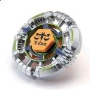

Libra DF145BS
| Libra DF145BS | |
|  | |
| Number: | BB-18 |
|---|---|
| System: | Metal System |
| Type: | Stamina |
Contents
Face: Libra
The Face depicts Libra, the seventh astrological sign of the Zodiac.
Wheel: Libra
- Weight: 40.5 grams
Libra's design is very circular, with numerous extremely small notches surrounding its perimeter. This, combined with its fairly heavy weight in proportion to other Wheels, made Libra one of the best Defense-oriented Wheels available for many years. It has since been outclassed many times over by Wheels such as Basalt. Prior to the release of Basalt, Libra was the heaviest Wheel ever produced.
IMPORTANT: Mold Variations
Libra has three different molds. The first mold was released in BB-18 Booster Libra DF145BS and BB-22 Bey Reshuffle Set Stamina & Defense Type, and the second in BB-25 Random Booster Vol.2 Legend Pisces. The second mold addressed breaking problems that the original mold faced by reinforcing the underside of four sections of the Wheel (pictured to the right). The performance of each mold varies from Wheel to Wheel; some are slightly heavier than others, which would make them better suited for Defense customizations, while lighter ones would be more effective in Stamina customs, the difference however is negligible. The third mold is released in BB-96 Beyblade Super Deck Set; this new mold is now allowed by WBBA regulations as adding a Metal face will result in the weight of 47.36g.
Use in Defense Customization
The reason why Libra was an absolute must own was because of its great Defensive power. MF-H Libra BD145RS was once a current top-tier Defense customization. The heavy weight of the Metal Face-Heavy, Libra, and BD145 made it an almost immovable tank. And, RS is able to withstand powerful Attacks due to its high friction with the stadium floor. It has since been outclassed, but its defensive power is still impressive.
Use in Balance Customization
Long before Libra was banned, it surprisingly found use in a very specific Balance customization; in fact, it was really the only competitively viable Balance customization at that point in time. The custom is Libra CH120RF. Here is how it performed against the current staple customs of the time:
- Versus Virgo DF145D -- use 120 height
Even though Libra is the heaviest Wheel ever created, because its weight is focused around the outside, it is still quite agile with RF. On its own, Libra is not a very effective Smash Attack Wheel, but its weight distribution in combination with the fast moving RF allow it to achieve an astonishing 90% win rate against Virgo DF145D. 120 height must be used in order for the Metal Wheels to make contact or it won't work.
- Versus Quetzalcoatl 90RF -- use 145 height
By switching to 145 height, the Track will absorb all of the hits dealt by Quetzalcoatl. The weight of Libra combined with the grip of RF give it enough defense to withstand most attacks, and again, the win rate is 90%.
- Versus MF Libra C145WB -- use 120 height
The win ratio against the top tier Defense combo isn't that great -- only about 60% -- but this still isn't bad, considering how strong it is against the other two types. If you can avoid using this combo against Defense-types, you should, but if you're forced into that situation you can win with a perfect shot and a little luck.
To effectively use this custom, you absolutely had to be able to perform Sliding Shoot because the window for landing a successful attack was much smaller than with other Storm or Quetzalcoatl-based Attackers. A skilled Blader could use this customization as an answer to almost anything that is thrown at them. However, during the time Libra was banned, this custom's use diminished greatly due to the multitude of parts that were released in its absence. It is still usable against Attack types, and Stamina types on lower Tracks, but it is nowhere near as versatile as it once was.
Controversy Over Libra
In April 2009 TAKARA-TOMY updated the WBBA Regulations. Included in these new regulations was a 47g weight limit, which meant that no Beyblade that cumulatively weighed more than 47g would be legal for tournament play. This was done to negate Libra's game-breaking power by making it illegal to use any Metal Face + Libra customization. This also allowed other Metal Face + Defensive Wheel customizations to be viable for competitive play. So, essentially, it could be said that the Metal Face was produced to allow Defense types other than Libra-based ones to be usable.
Initially the WBO did not react to this rule change and did not impose any sort of weight limit, allowing heavy Libra customs to still be tournament legal. However, in December 2009 after countless tournaments were won, most through simply the use of a Libra-based custom such as MF Libra C145WB, and seeing that the then new RF, the one part that could stand up to these customizations was difficult to control, the following poll was conducted:
Changes to WBO Competitive Gameplay: Balancing Competitive Combo's [Re: Libra]: What changes do you think should be made?
- Do not change the rules. - 56 votes (54.37%)
- Restrict the use of the Libra Wheel + Metal Face and any 145 Track except DF145 and 145 in combos. - 27 votes (26.21%)
- Ban the Libra Wheel entirely. - 20 votes (19.42%)
As the results illustrate, there was much controversy over even the suggestion of restricting a Wheel. Combining the second and third options, which advocate some sort of restriction, and comparing it to the first option, it can be said that the community could almost be split evenly into sides that wanted something done, and those that didn't. However, despite the majority of votes going towards not changing anything, the proportion of votes that came from what could be considered competitive-level Beybladers was larger for the second and third options. Addtionally, those that voted for the first option did not provide compelling arguments as to why Libra should be allowed. In May 2010, Release 2 of the WBOs Standard and Universal Rules was released, with the decision that Libra was now banned from use outright in any competitive situation.
How Libra Dominated the MFB Metagame and Why It Was Banned
After Libra was released and weighed, it did not take very long for it to shoot to the top of the MFB metagame in both Stamina and Defense customizations, and eventually a remarkably useful Balance customization, as listed above. Aside from it's circular, uninterrupted shape, it's insane weight in comparison with other Wheels is the main reason for its game-breaking power. The fact that TAKARA-TOMY imposed the 47g weight limit essentially means they admitted that it was a mistake to release Libra in the form that they did.
If it isn't obvious already, the reason that Libra was banned was that it transformed Beyblade into a game of rock-paper-scissors. Of course, inherently the game will always be this, but Libra allowed for no deviation. You either used Libra or you didn't win. The game revolved around defeating Libra, and that isn't what a good metagame looks like. There was no skill involved. Restricting Libra would have been a nice compromise for both sides, made it more difficult to police it's use in tournaments, so banning it outright was a much easier option.
The opposition towards banning Libra was incredibly high, especially among players who owned one, but among high level, competitive Bladers, the game had become incredibly boring. In the end though, through the banning of Libra, the Beyblade metagame was undeniably opened up considerably, allowing numerous parts that may have never seen use to be utilized in top-tier customizations.
The Reintroduction of Libra
After almost nine months of being restricted, Libra was reintroduced into competitive play in February 2011 with release 3.5 of the WBO Standard and Universal Rules. As would be expected given the controversial decision to ban Libra, it was intensely contested almost immediately after the ban was put into place. The ban was originally imposed with no intention of it being permanent; its sole purpose was to help balance and open up the MFB metagame until a point in the future when the reintroduction of the part in question, Libra, would no longer be the dominating force it once was when Bladers were opposed with it.
Throughout the nine months that passed, the contention continued, and the Beyblade metagame evolved immensely; countless new and useful parts were introduced, an explosion of experimentation and testing occurred in unison with the growing userbase of the WBO, and Attack types finally became a dominant force in the game?especially before the release of RS and RSF?in the absence of Libra. The fear regarding the use of rubber-based Bottoms such as RF on Attack types diminished with the plethora of new effective parts that were released, and the customs that were discovered. There was no longer but one viable Track for Stamina, no longer but one viable Bottom for Defense; the game was no longer a simple game of rock-paper-scissors. To this end, the ban on Libra served its purpose. It shifted the focus of the game away from one particular part.
Track: Down Force 145
| Weight: | 1.5 grams | Full Width: | 21.53 mm | Height: | 14.50 mm |
DF145 has four upward facing wings protruding from the top of the Track, which aside from giving it extra weight are meant to push air downwards. It is on par with 145, while AD145 is superior by a small margin when used in Stamina combinations.
Use in Stamina Customization
If the aforementioned parts aren't accessible, DF145 can still be put to good use in the custom, Scythe Kronos DF145WD.
Bottom: Ball Sharp
| Weight: | 0.6 gram | Full Width: | 15.71 mm | Tip Width: | 5.64 mm | Full Height: | 8.78 mm | Sharp Tip Angle: | 35° |
BS's performance is quite similar to that of S. BS offers very little movement and as such gives no Attack potential. The pointed tip allows for very little friction between the Bottom and the stadium surface, which helps prevent the loss of spin velocity. BS has decent Stamina, but because the tip is so fine, it experiences the same balance issues that S does. D, SD, and WD are much better choices.
Other Versions
- Libra D125HF - Random Booster Vol.2 Legend Pisces (Black)
- Libra 100F - Random Booster Vol.2 Legend Pisces (Red)
- Libra 145S - BB-22 BeyReshuffle Set Stamina & Defense Type (Purple)
- Libra 100D - BB-96 Beyblade Super Deck Set (Green)
Gallery
-
Libra DF145BS
-
Libra DF145BS side view
-
Libra Wheel
-
Libra Wheel bottom view
-
Down Force 145
-
Down Force 145
-
Ball Sharp
Libra 100D - Beyblade Super Deck Set
-
Libra 100D
-
Libra 100D top view
-
Libra 100D underside view
Overall
Libra was once the most versatile and powerful part in MFB, but its use has since diminished as it has been outclassed over time by Wheels such as Basalt and Death. DF145 is a viable Stamina Track, but BS is useless, and Libra has become very close to it at this point. Aside from collection purposes, there is almost no reason to purchase this Beyblade.